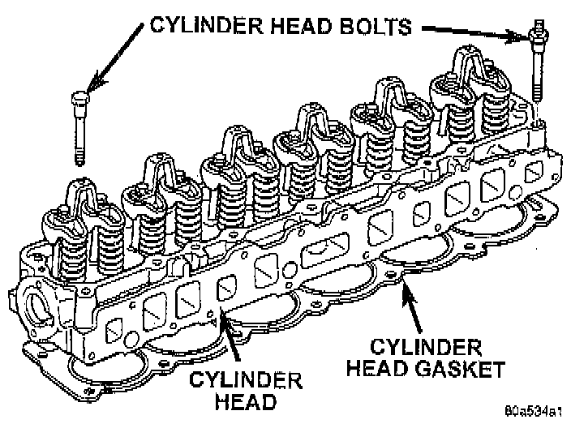

Removal

NOTE: This procedure can be done with the engine in or out of the vehicle.
1. Disconnect negative cable from battery.
WARNING: DO NOT REMOVE THE CYLINDER BLOCK DRAIN PLUGS OR LOOSEN THE RADIATOR DRAIN COCK WITH THE SYSTEM HOT AND PRESSURIZED BECAUSE SERIOUS BURNS FROM THE COOLANT CAN OCCUR.
2. Drain the coolant and disconnect the hoses at the engine thermostat housing. DO NOT waste reusable coolant. If the solution is clean and is being drained only to service the engine or cooling system, drain the coolant into a clean container for reuse.
3. Remove the air cleaner assembly.
4. Remove the engine cylinder head cover.
5. Remove the capscrews, bridge and pivot assemblies and rocker arms.
6. Remove the push rods. Retain the push rods, bridges, pivots and rocker arms in the same order as removed.
7. Loosen the serpentine drive belt at the power steering pump, if equipped or at the idler pulley.
8. If equipped with air conditioning, remove the air conditioning compressor.
9. If equipped, disconnect the power steering pump bracket. Set the pump and bracket aside. DO NOT disconnect the hoses.
10. Perform the Fuel System Pressure Release procedure. Refer to Powertrain Management.
11. Remove the fuel lines.
12. Remove the intake and engine exhaust manifolds from the engine cylinder head.
13. Disconnect the ignition wires and remove the spark plugs.
14. Disconnect the temperature sending unit wire connector.
15. Remove the ignition coil and bracket assembly.
16. Remove the engine cylinder head bolts. Bolt No.14 cannot be removed until the head is moved forward. Pull bolt No.14 out as far as it will go and then suspend the bolt in this position (tape around the bolt).
17. Remove the engine cylinder head and gasket.
18. If this was the first time the bolts were removed, put a paint dab on the top of the bolt. If the bolts have a paint dab on the top of the bolt or it isn't known if they were used before, discard the bolts.
19. Stuff clean lint free shop towels into the cylinder bores.